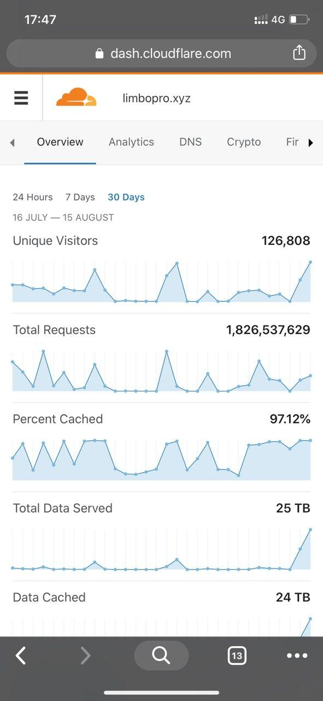
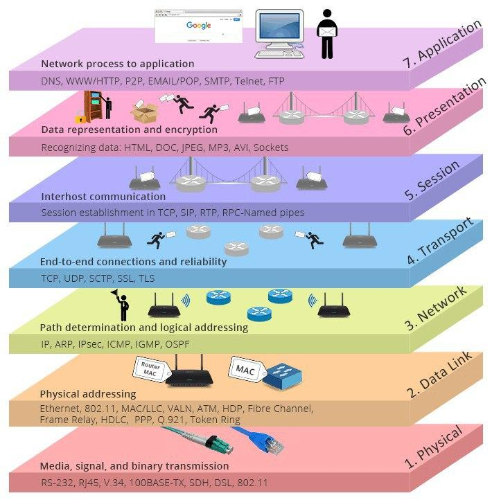
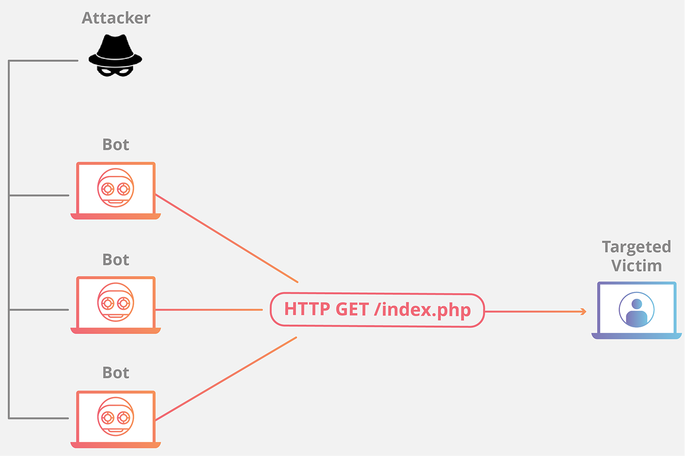
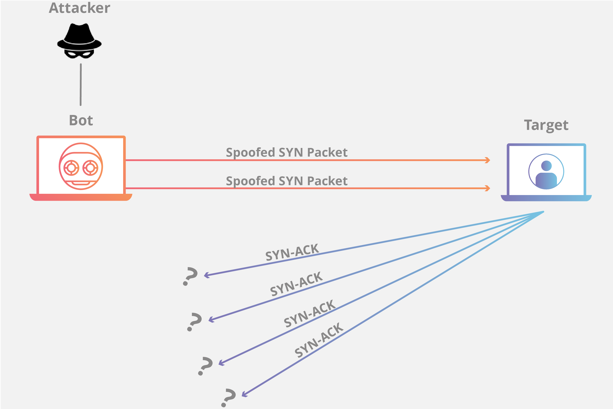
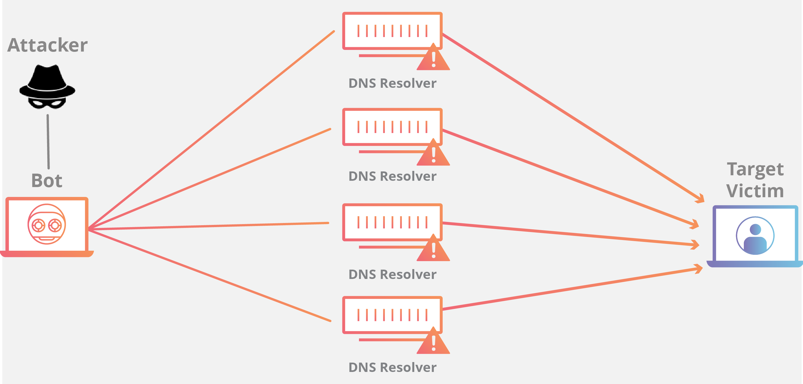
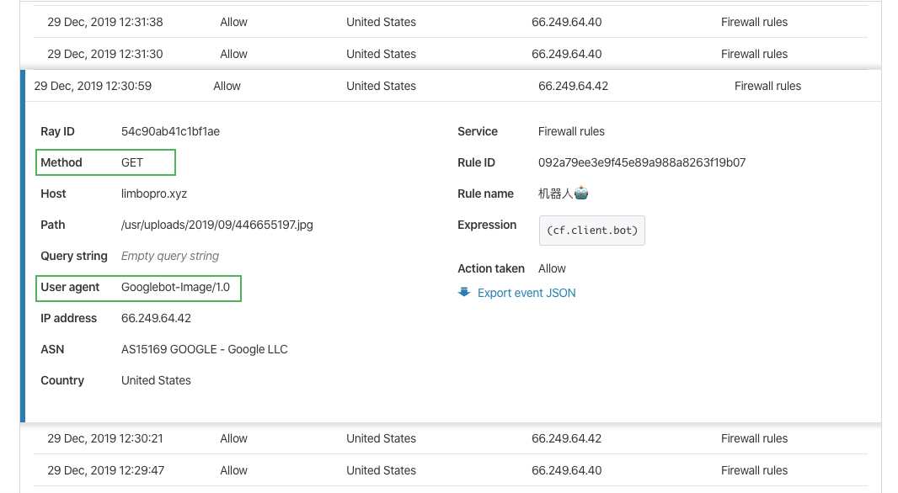

本文隶属于 网站优化 分类，点击分类名称查看更多相关主题；
I. 主理人序

DDoS防御还是要做的，兴许哪天就挨打了呢。(另，这篇文章不是完全教程，总结均由实践得出，内容比较白话，教大家知其然知其所以然，排除加钱上高防IP以及扩容的可能性；1.Cloudflare CDN（免费套餐足矣），2.MySQL/PHP+Redis 缓存（开源），3.全站静态化（每日备份），秒解狂暴DDoS攻击，且不会花费任何费用，几乎免费；
另外，新增使用 Cloudflare 百分百抗DDoS教程：自动提交异常IP至Cloudflare，以实现CDN前端封锁DDoS攻击；（01.05.2020）
II. 本文概要
0.网站为什么会被DDoS
1.DDoS为何物
2.LNMP（Web后端
3.静态网页/动态网页（用户所见所得
4.HTTP 请求方法（浏览器如何与服务器联络
5.User-Agent（浏览器身份
6.502 Bad Gateway（服务器状态反馈代码
7.如何应对DDoS（思路
III. 为什么会被DDoS
原因大概分为四种
1.小朋友玩过家家
2.个人情感宣泄
3.名
4.利
个人网站被打的原因一般是因为前两种，
主动攻击声名远扬[某些领域]的网站一般是因为名，
雇人攻击的一般是因为利，
正常情况下，小网站是不会有人碰的，
这句话不是瞎说。
一些具有实践意义的建议
高调做人，低调做事
IV. DDoS是什么
DDoS攻击，又称为分布式拒绝服务 (DDoS) ；攻击是通过大规模 Internet 流量淹没目标服务器或其周边基础设施以破坏目标服务器、服务或网络正常流量的恶意行为。DDoS 攻击利用多台受损计算机系统作为攻击流量来源以达到攻击效果。利用的机器可以包括计算机，也可以包括其他联网资源（如 IoT 设备）。总体而言，DDoS 攻击好比高速公路发生交通堵塞，妨碍常规车辆抵达预定目的地。
常见的 DDoS 攻击有哪几类？
不同的 DDoS 攻击手段针对不同的网络连接组件。为了解不同 DDoS 攻击的工作原理，必需掌握建立网络连接的方式。Internet 网络连接由许多不同的组件或“层”构成。就像打地基盖房子一样，模型中的每一步都有不同的目的。OSI 模型（如下图所示）是一个概念框架，用于描述 7 个不同层级的网络连接。

虽然几乎所有 DDoS 攻击都涉及用流量淹没目标设备或网络，但攻击可以分为三类。攻击者可能利用一种或多种不同的攻击手段，也可能根据目标采取的防范措施循环使用多种攻击手段。
应用程序层攻击

攻击目标：有时称为第 7 层 DDoS 攻击（参考 OSI 模型第 7 层），此类攻击的目标是耗尽目标资源。攻击目标是生成网页并传输网页响应 HTTP 请求的服务器层。 在客户端执行一项 HTTP 请求费用很低，但目标服务器做出响应却可能比较昂贵，因为服务器通常必须加载多个文件并运行数据库查询才能创建网页。第 7 层攻击很难防御，因为很难确定流量是否存在恶意。
协议攻击

攻击目标：协议攻击（也称为状态表耗尽攻击）旨在耗尽 Web 应用程序服务器或中间资源（如防火墙和负载均衡器）的可用状态表容量，进而导致服务中断。协议攻击利用协议堆栈第 3 层和第 4 层的弱点致使目标无法访问。
容量耗尽攻击

攻击目标：此类攻击尝试耗尽目标和大型 Internet 之间的可用带宽，从而造成拥塞。运用某种放大攻击或其他生成大量流量的手段（如僵尸网络请求），向目标发送大量数据。
via 什么是 DDoS 攻击？深入探索 DDoS 的工作原理及其阻止方法。 （Cloudflare 资料库）；
V. LA/NMP
知其然，知其所以然；世界上大部分网站都是运行在LNMP之上的，包括但不限于淘宝，百度等；说到建站，敢问谁不爱这四件套？软体开源，社区良好；
LA/NMP是指一组通常一起使用来运行动态网站或者服务器的自由软件名称首字母缩写。
Linux，操作系统
Apache/Nginx，网页服务器
MariaDB或MySQL，数据库管理系统（或者数据库服务器）
PHP、Perl或Python，脚本语言
Linux
这里是只允许在服务器上的Linux系统；Linux（聆听i/ˈlɪnəks/ LIN-əks）是一种自由和开放源码的类UNIX操作系统。该操作系统的内核由林纳斯·托瓦兹在1991年10月5日首次发布5，在加上用户空间的应用程序之后，成为Linux操作系统。Linux也是自由软件和开放源代码软件发展中最著名的例子。只要遵循GNU 通用公共许可证（GPL），任何个人和机构都可以自由地使用Linux的所有底层源代码，也可以自由地修改和再发布。
via 维基百科
Nginx
Nginx：Nginx**（发音同“engine X”）是异步框架的网页伺服器，也可以用作反向代理、负载平衡器和HTTP缓存。
Tengine是由淘宝网发起的Web服务器项目。它在Nginx的基础上，针对大访问量网站的需求，添加了很多高级功能和特性。Tengine的性能和稳定性已经在大型的网站如淘宝网，天猫商城等得到了很好的检验。它的最终目标是打造一个高效、稳定、安全、易用的Web平台。
Tengine version: Tengine/2.3.2
nginx version: nginx/1.17.3以上，我目前安装的版本（可以在安装Nginx的基础上装Tengine的，使用一些新特性；
MySQL
MySQL 是全球最受欢迎的开源数据库，支持经济高效地交付可靠、高性能和可扩展的基于 Web 的和嵌入式数据库应用。它是一个集成、事务安全、符合 ACID 的数据库，具备全面的提交、回滚、崩溃恢复和行级锁定功能。MySQL 不仅简便易用、易于扩展、性能卓越，而且还提供了一整套数据库驱动程序和可视化工具，可帮助开发人员和 DBA 自主构建和管理业务关键型 MySQL 应用。
via MySQL
伺服器
服务器通常以网络作为媒介，既可以通过局域网对内提供服务，也可以通过广域网对外提供服务。伺服器的最大特点就是其强大的运算能力，即使是一部简单的伺服器系统，通常也至少也要有两颗处理器以构成对称多处理架构，使其能在短时间内完成大量工作，并为大量用户提供服务。
via 维基百科
VI. 502 Bad Gateway
**502**Bad Gateway 是一种HTTP协议的服务器端错误状态代码，它表示作为网关或代理角色的服务器，从上游服务器（如tomcat、php-fpm）中接收到的响应是无效的。
[Gateway](https://zh.wikipedia.org/wiki/Gateway_(telecommunications) （网关）在计算机网络体系中可以指代不同的设备，502 错误通常不是客户端能够修复的，而是需要由途径的Web服务器或者代理服务器（LNMP）对其进行修复。
VII. 静态/动态页面
静态页面：htm、html、shtml、xml
静态网页是指存放在服务器文件系统中实实在在的HTML文件。当用户在浏览器中输入页面的URL，然后回车，浏览器就会将对应的html文件下载、渲染并呈现在窗口中。早期的网站通常都是由静态页面制作的。
动态页面：asp、jsp、php、perl、cgi
动态网页是相对于静态网页而言的。当浏览器请求服务器的某个页面时，服务器根据当前时间、环境参数、数据库操作等动态的生成HTML页面，然后在发送给浏览器（后面的处理就跟静态网页一样了）。很明显，动态网页中的“动态”是指服务器端页面的动态生成，相反，“静态”则指页面是实实在在的、独立的文件。
via 静态网页与动态网页的区别
姿势点小节
静态页面不会涉及数据库请求，也无需经过PHP处理，几乎零消耗；这样的情况下，只需要使用到nginx，而nginx的高性能低消耗，想操烂基本不可能（
VIII. HTTP 请求方法
HTTP 定义了一组请求方法，以表明要对给定资源执行的操作。
GET GET方法请求一个指定资源的表示形式. 使用GET的请求应该只被用于获取数据。
HEAD HEAD方法请求一个与GET请求的响应相同的响应，但没有响应体。
POST POST方法用于将实体提交到指定的资源，通常导致在服务器上的状态变化或副作用。
PUT PUT方法用请求有效载荷替换目标资源的所有当前表示。
DELETE DELETE方法删除指定的资源。
CONNECT CONNECT方法建立一个到由目标资源标识的服务器的隧道。
OPTIONS OPTIONS方法用于描述目标资源的通信选项。
TRACE TRACE方法沿着到目标资源的路径执行一个消息环回测试。
PATCH PATCH方法用于对资源应用部分修改。via MDN web docs
我们一般只会用到前三种，GET/HEAD/POST；用户视角来讲，打开一个网站无非是请求[GET]它的资源（例如美女图片等），发文章[POST]向服务器推送数据；
IX. User-Agent
User-Agent 首部包含了一个特征字符串，用来让网络协议的对端来识别发起请求的用户代理软件的应用类型、操作系统、软件开发商以及版本号。
浏览器通常使用的格式为：
User-Agent: Mozilla/<version> (<system-information>) <platform> (<platform-details>) <extensions>X. 防御DDoS
0.升级硬件(服务器)
1.过滤请求
2.缓存数据库
3.网页静态化
4.TLS1.3
升级硬件
软妹币玩家请略过，还是说点软的吧；
使用Cloudflare CDN
高级DDoS 防护和缓解，我选Cloudflare
Cloudflare 的内容分发网络（CDN）是一组分布在不同地理位置的服务器，可确保快速交付 Internet 内容，包括 HTML 页面、JavaScript 文件、样式表和图像。在 Cloudflare 上缓存静态资源可减少服务器负载和带宽，不会因带宽峰值而产生额外费用。
用户体验： 没有 Cloudflare 的 CDN，距离您的源 Web 服务器较远的访问者会体验到页面加载速度变慢。Cloudflare 的 Anycast 网络使内容在地理上更接近您的访问者，从而减少页面负载和延迟。
流量峰值： 由于重大新闻发布或在线事件，突然涌入您的网站的流量可能会使源 Web 服务器超载。Cloudflare 的 CDN 可提供您缓存的内容，以减轻源 Web 服务器的负载。
DDoS 防护： 分布式拒绝服务（DDoS）攻击通过用流量淹没其基础架构来中断网站服务。Cloudflare 的 CDN 的网络容量为史上最大 DDoS 攻击的 15 倍，并且可以处理现代 DDoS 以确保您的网站正常运行。

例如本博客也在使用的Cloudflare & Cloudflare清退边缘丨运营通报 30TB+流量过境
使用Cloudflare CDN的五个好处
1.隐藏服务器IP，SYN/ACK攻击直接豁免，亦可避免攻击者扫描服务器端口找到漏洞；
2.防火墙前置，在CDN上即已缓解/过滤异常请求[GET/POST]压力；
3.验证码前置，即人机验证；（技术不够的DDoS攻击根本绕不过，攻击随即缓解；）
4.缓存静态资源，大大减少服务器带宽压力；
5.Page Rule，Page Rule 使您能够根据页面的 URL 进行各种操作，例如创建重定向、微调缓存行为或启用和禁用我们的各种服务。
在没碰到高端DDoS玩家之前，Cloudflare 应该能力保你站不死的；
使用缓存
本博客目前的优先策略是 MySQL/PHP + Redis；其次是网站内容全部静态化；
这里需要再强调的是，每次刷新网页都会有新的请求[GET]发送到服务器，然后服务器后台通过PHP+MySQL一顿骚操作动态生成HTML文档，并将HTMl文档交由Nginx转发到客户端[目标浏览器]，然后你就可以看到美图了；而这PHP+MySQL两个软体也不是吃素的，是很吃系统资源的，刷新多了，CPU炸裂，[Nginx]直接返回[502 Bad Gateway]给你，看个球。
动态生成页面就像下馆子，现点现做，遇到客流高峰也总有人手不够的时候，其他客人只有干等，已经吃上的客人还想再点菜，也得干等；相反，静态页面就好比，得，人手开销大，就算再请师傅厨房也塞不下，来了客人总得招待吧，虽然有几个捣乱的，那就提前备好餐，让前台麻溜的上菜就完了；
而在这里，厨房就是你的服务器（带宽有限，CPU有限，硬盘有限，内存有限），厨子就是Php（掌勺人）+MySQL（配菜师傅），前台就是Nginx，炒不炒得出来是你们[Php+Mysql]的事儿，但论上菜，不带我[Nginx]怕的；（是的，Nginx就是这么骚...，知道这一点会让你信心大增；
Redis介绍
Redis是一个使用ANSI C编写的开源、支持网络、基于内存、可选持久性的键值对存储数据库。从2015年6月开始，Redis的开发由Redis Labs赞助，而2013年5月至2015年6月期间，其开发由Pivotal赞助。在2013年5月之前，其开发由VMware赞助。根据月度排行网站DB-Engines.com的数据，Redis是最流行的键值对存储数据库。
目前总结了部分网友经验以及博主的实践，暂且推荐此种组合：Redis+MySQL/PHP对数据库进行缓存处理；如果你也使用 Typecho 建站，那么推荐你使用 TPCache插件[Plugins]，配合Redis使用，效果极佳；（秘：按理说我用的VPS应该能抗800并发/每秒，也就是一天跑个69120000 PV没什么问题（606024*1000）
Queries per second (每秒查询次数) 非相关性分析，此并发非彼并发；
300～800QPS——带宽极限型
目前服务器大多用了IDC机房提供了“百兆带宽”，“百兆出口”，似乎这就是单机的最高配了。这意味着网站出口的实际带宽是8M Byte左右。假定每个页面只有10K Byte，在这个并发条件下，即便你的网站是静态页面，不用什么数据库之类的技术，百兆带宽早已经吃完。这个情况下首要考虑是CDN加速／异地缓存，多机负载等技术。
500～1000QPS——内网带宽极限＋Memcache极限型
由于Key/value的特性，每个页面对memcache的请求远大于直接对DB的请求，Memcache的悲观并发数在2w左右，看似很高，但事实上大多数情况下，首先是有可能在此之前内网的带宽就已经吃光，接着是在8K QPS左右的情况下，但节点上的Memcache已经表现出了不稳定，如果代码上没有足够的优化，缓存的miss可能会导致系统直接将压力转嫁到了DB层上，这就使整个系统在达到某个明显的阀值之后，性能迅速下滑或直接宕机。
1000～2000QPS——锁/同步模式极限型
好吧，一句话：线程模型决定吞吐量。不管你系统中最常见的锁是什么锁，这个级别下，文件系统访问锁都成为了灾难。从网站内容的角度上讲，几乎任何的增删改都会牵扯到锁。“等解锁”的过程将会成为系统最重要的性能消耗。这就要求系统中不能存在中央节点，所有的数据都必须分布存储，数据需要分布处理。总之，关键词：分布
————————————————
版权声明：本文为CSDN博主「Storm啊」的原创文章，遵循 CC 4.0 BY-SA 版权协议，转载请附上原文出处链接及本声明。
原文链接：https://blog.csdn.net/duzilonglove/article/details/78616167所以说，Redis + PHP 还是挺耐操的，需要注意的是1000～2000QPS下 Redis雪崩、穿透和击穿问题（可以自己深入了解下）。
静态化
可以参考此文：个人博客 DDoS 攻击的防范教程丨低成本&可执行，湮灭DDoS攻击者最后的倔强；
封禁异常请求IP
参考：批量封禁IP 地址、网站被CC 攻击的解决办法丨简易版 ，新封禁脚本暂未放进博客；
使用TLS1.3
参考：TLS 1.3 白话科普丨如何提高网站安全性和减少延迟；
XI. 总结
1.CDN一定要部署的，无论是否被攻击；
2.后端对MySQL进行缓存处理，避免对数据库频繁查询；搭配 Redis 使用，效果极佳；
XII. 联系主理人
1.关注频道 https://t.me/limboprossr 不失联；
2.毒奶粉们（我管我的Fans）可联系 TG机器人 或发送 邮件 获取帮助；
3.或点击本页面右下角的聊天按钮联系；
版权属于：毒奶
联系我们：https://limbopro.com/6.html
毒奶搜索：https://limbopro.com/search.html
毒奶导航：https://limbopro.com/daohang/index.html本文链接：https://limbopro.com/archives/DDoS.html
本文采用 CC BY-NC-SA 4.0 许可协议，转载或引用本文时请遵守许可协议，注明出处、不得用于商业用途！